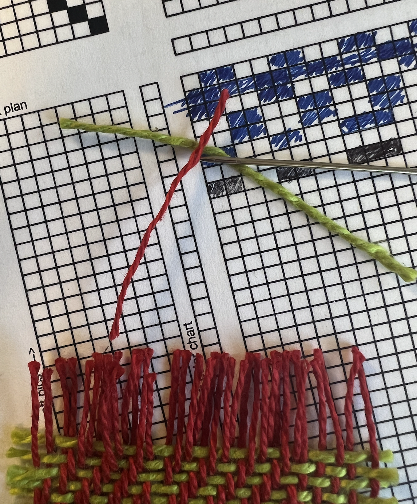
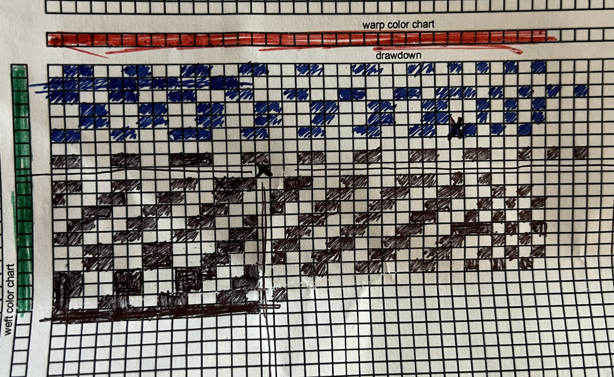

Drawdown - We started by picking swatches in class, and I decided on a swatch with contrasting colors so I could easily see the differences between the warp and weft. After photographing the swatch, picking off a few adjacent sides, and orienting the swatch, I moved the green weft pics with a pin. I was doing well until the eighth row when I accidentally pulled out one of the warp ends with a weft pic. This is noted in my worksheet, but using ADACAD, I did 'predict' how the draft would've looked like with the warp end. As I got to the last four rows of weft pics, the weave was quite loose, and I was worried about the final row falling out, so I drafted all four rows together without removing the weft pics. It was a bit complicated but using my pin to hold my place helped immensely. Lift Plan - Throughout creating the lift plan, I was unsure if I was doing it right, and I had a lot of self-doubt as to whether I was correct. At one point, I tried a new technique that I thought would help, but it ended up creating an inverse of the draft, and I think something else is needed. I'll need some more help on the techniques of writing lift plans before I am ready to recreate something on the loom. Threading - Finishing up the threading is the last thing I do before I move on to the Color Chart. The tie-up tells us how the warps are tied on the loom, and helps us double check to see if the drawdown was complete. I used the ADACad provided to help determine where my swatch lined up on the warp ends. Color Chart - For added effect, I tried to color each square in the direction that the yarn/thread would go, but it was easy to get carried away because I like dark squares so you can see the color. I decided to do the color chart of how it would be if there were no missed lines in the draft or missing warp threads, so it looks more like the original piece.